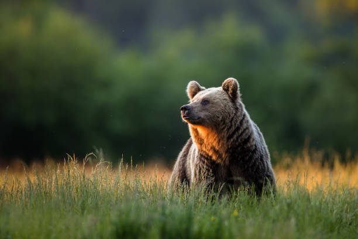

Animais Fantásticos
-

-

-

-

-

Coruja
As características mais comuns às corujas são: apresentam tamanho variado entre 20 cm e 70 cm, com peso variando de 100 g a 2,5 kg, dependendo da espécie. O corpo é recoberto por penas em tons que vão do marrom ao cinza, ajudando na camuflagem. As corujas têm uma visão noturna excelente, pescoço longo e flexível que permite girá-lo em até 270 graus sem mover o corpo.
Essas aves possuem garras afiadas e bico curvado para capturar suas presas. Seu voo é silencioso devido à estrutura de suas penas, o que facilita a caça noturna. Além disso, as corujas são conhecidas por serem aves solitárias, com hábitos predominantemente noturnos.
Flamingo
Os flamingos são aves conhecidas por sua plumagem rosa, que pode variar em intensidade dependendo da dieta. Eles têm pernas longas e finas que permitem caminhar em águas rasas, além de um bico curvado adaptado para filtrar alimentos, como algas e pequenos crustáceos. Os flamingos medem entre 1,00 e 1,45 metros de altura e pesam de 2 a 4 kg, dependendo da espécie.
Suas colônias podem ser enormes, chegando a milhares de indivíduos. Eles possuem um ritual de acasalamento que inclui exibições em grupo, como marchas coordenadas e movimentos de cabeça. O nome "flamingo" deriva do espanhol, que significa "cor de chama".
Arara
As araras são aves coloridas, com plumagens vibrantes que variam entre azul, vermelho, verde e amarelo, dependendo da espécie. Elas possuem bicos fortes e curvados, que utilizam para quebrar sementes e frutas. As araras podem medir até 1 metro de comprimento, com uma envergadura de asas de até 1,5 metros, e pesam entre 900 g e 1,5 kg.
Essas aves são extremamente sociais e vivem em grupos familiares. A comunicação entre elas é feita através de vocalizações altas, e são conhecidas por sua inteligência, sendo capazes de imitar sons e palavras humanas. Infelizmente, algumas espécies de arara estão ameaçadas de extinção devido à perda de habitat e ao tráfico de animais.
Esquilo
Os esquilos são pequenos mamíferos roedores, conhecidos por seu corpo ágil e cauda longa e peluda, que os ajuda a equilibrar-se enquanto sobem em árvores. Dependendo da espécie, podem medir entre 20 e 50 cm, pesando entre 250 g e 1 kg. Seus pelos podem variar em tons de marrom, cinza ou vermelho.
Esquilos são famosos por sua habilidade de armazenar alimentos, como nozes e sementes, para consumir no inverno. Eles têm uma excelente memória e conseguem lembrar onde enterraram seus alimentos. São também animais diurnos e são encontrados em florestas, parques e áreas urbanas.
Girafa
As girafas são os animais terrestres mais altos, com machos podendo atingir até 5,5 metros de altura. Elas possuem pescoços longos e pernas esguias, e seu peso pode variar entre 800 kg e 1.600 kg. A pelagem da girafa é composta por manchas marrons sobre um fundo claro, com padrões únicos para cada indivíduo.
As girafas se alimentam principalmente de folhas de árvores altas, como a acácia, utilizando suas longas línguas de até 45 cm para alcançar os galhos. Elas têm uma excelente visão, o que as ajuda a se manterem alertas contra predadores. As girafas são conhecidas por sua marcha peculiar, movendo ambas as pernas de um lado do corpo simultaneamente.
Onça
A onça-pintada é o maior felino das Américas, conhecida por sua pelagem amarela com manchas pretas. Elas podem medir até 1,85 metros de comprimento, sem contar a cauda, e pesar entre 56 e 96 kg, dependendo da região em que vivem. As onças são musculosas e robustas, com uma mordida extremamente forte, capaz de perfurar cascos de tartaruga.
Esses felinos são predadores solitários e territoriais, caçando principalmente à noite. Alimentam-se de uma grande variedade de presas, como capivaras, veados e jacarés. A onça é um símbolo de poder nas culturas indígenas, e sua presença é um indicador de ecossistemas saudáveis.